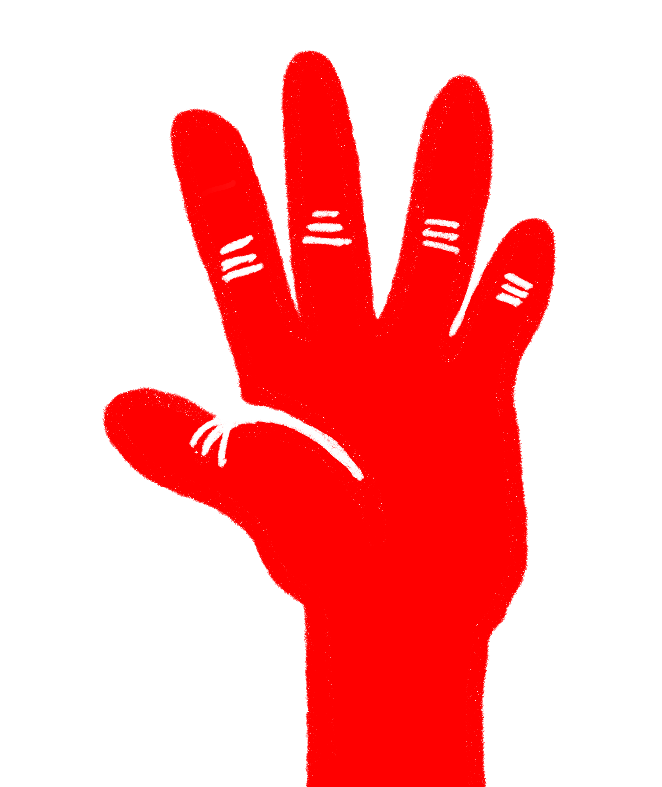

侮辱手勢
希臘、墨西哥、中東、非洲
Mountza
這個手勢可以追溯到拜占庭時期，當時，犯人會被帶到大街上遊行示眾，然後獄卒會將煤渣塗在犯人的臉上以羞辱他們。而守衛們會用張開的手將煤渣推到犯人的臉上，象徵羞辱。
因為煤渣首先被收集在手掌中，然後張開手指來擦拭在人的臉上，所以這個手勢本身就變得具有侮辱性，以這種材料的名稱命名，被稱為“mountza”。現代希臘文mountzoura (μουντζούρα) 或moutzoura (μουτζούρα) 表示污漬、塗鴉或深色污漬，具有 相同的起源。

